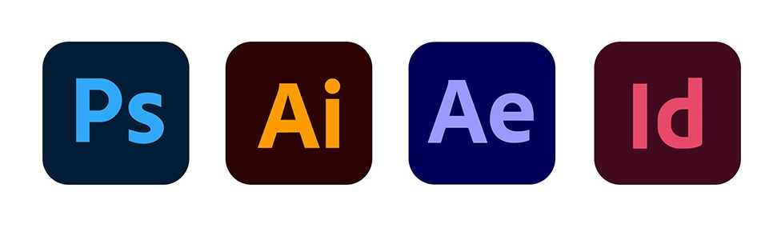

Began studying Digital Design
I started studying Digital Design during Covid, beginning with typography classes. I was living in Califorina during this time.
My name is Mien Zuiderveen and I'm an aspiring Motion Designer and all around creative. I'm getting my Bachelors in Digital Design at the University of Colorado at Denver and will graduate in the Spring of 2027. I love to express meaningful stories through my creations. My goal is to utilize my design skills to support issues such as social justice, mental health, the environment, LGBTQ+, and cultural diversity.
I started studying Digital Design during Covid, beginning with typography classes. I was living in Califorina during this time.
I moved to Colorado and continued my Digital Design studies at CCD and would later transfer to CU Denver.
I worked at the front desk as a work study for the Graphic Design and Visual Arts Department at Community College of Denver.
I worked as a Design Assistant for a design professor at the Community College of Denver. I helped her with projects in her Capstone class as well as design requests from the college.
I Designed posters promoting workshops, scholarships and financial aid information for the Financial Aid & Scholarships Department at CU Denver.
Graduated with a Bachelors in Digital Design at CU Denver.

mk.zuiderveen@gmail.com